This analysis focuses on building predictive models to forecast future trends based on historical data.
Author
Aaron Powell & Joshua Samuel
Published
April 8, 2026
Simple Linear Regression
Taking a simple approach first, we will model log(SalePrice) as a function of Above grade (ground) living area square feet (GrLivArea). GrLivArea is a strong predictor of SalePrice and is commonly used in housing price models.
# Compute correlation matrix from numeric variables onlynumeric_train <- train |>select(where(is.numeric))cor_matrix <-cor(numeric_train, use ="complete.obs")saleprice_cor <- cor_matrix[, "SalePrice"]cor_df <-tibble(Variable =names(saleprice_cor),Correlation =round(saleprice_cor, 3),Abs_Correlation =abs(Correlation)) |>arrange(desc(Abs_Correlation))print("Top variables by |correlation| with SalePrice:")
[1] "Top variables by |correlation| with SalePrice:"
model_slr <-lm(log(SalePrice) ~ GrLivArea, data = train, subset =c(-1299, -524)) # Exclude outlier 1299 and 524summary(model_slr)
Call:
lm(formula = log(SalePrice) ~ GrLivArea, data = train, subset = c(-1299,
-524))
Residuals:
Min 1Q Median 3Q Max
-1.31695 -0.14499 0.03338 0.16232 0.90721
Coefficients:
Estimate Std. Error t value Pr(>|t|)
(Intercept) 1.116e+01 2.263e-02 493.23 <2e-16 ***
GrLivArea 5.708e-04 1.420e-05 40.19 <2e-16 ***
---
Signif. codes: 0 '***' 0.001 '**' 0.01 '*' 0.05 '.' 0.1 ' ' 1
Residual standard error: 0.2753 on 1456 degrees of freedom
Multiple R-squared: 0.5259, Adjusted R-squared: 0.5256
F-statistic: 1615 on 1 and 1456 DF, p-value: < 2.2e-16
par(mfrow =c(2, 2))plot(model_slr)
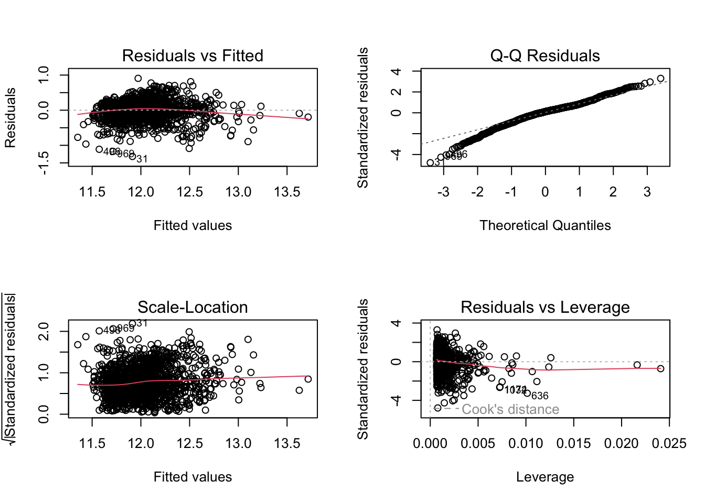
par(mfrow =c(1, 1))# Histogram with normal distribution overlaidhist(model_slr$residuals, probability =TRUE, # Use density scalemain ="Histogram of Residuals",xlab ="Residuals",col ="lightblue",border ="black")# Add normal curvecurve(dnorm(x, mean =mean(model_slr$residuals), sd =sd(model_slr$residuals)), add =TRUE, col ="red", lwd =2)
1299 remains an outlier. It is a 5600 sqft house sold as a unfinished build for 160,000. This is an extreme case and likely not representative of the general market, so we will exclude it from our modeling.
524 is a 4700 sqft house sold for 184750 as a partial unfinished new build, which represents another extreme case. For SLR we are not considering any other factor than GrLivArea so we will exclude this special case.
Initial Multiple Linear Regression
Number of Full Bathrooms (FullBath) is another highly correlated predictor of SalePrice. We will add it to the model to see if it improves fit and addresses any issues with the SLR model.
Call:
lm(formula = log(SalePrice) ~ GrLivArea + FullBath, data = train,
subset = c(-1299, -524, -636, -1124))
Residuals:
Min 1Q Median 3Q Max
-1.24754 -0.12382 0.02433 0.15368 0.93386
Coefficients:
Estimate Std. Error t value Pr(>|t|)
(Intercept) 1.107e+01 2.355e-02 470.252 <2e-16 ***
GrLivArea 4.639e-04 1.794e-05 25.850 <2e-16 ***
FullBath 1.606e-01 1.649e-02 9.738 <2e-16 ***
---
Signif. codes: 0 '***' 0.001 '**' 0.01 '*' 0.05 '.' 0.1 ' ' 1
Residual standard error: 0.266 on 1453 degrees of freedom
Multiple R-squared: 0.558, Adjusted R-squared: 0.5574
F-statistic: 917.2 on 2 and 1453 DF, p-value: < 2.2e-16
par(mfrow =c(2, 2))plot(model_mlr1)
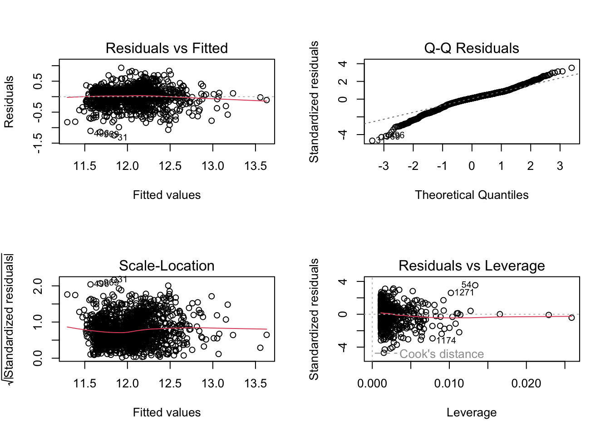
par(mfrow =c(1, 1))# Histogram with normal distribution overlaidhist(model_mlr1$residuals, probability =TRUE, # Use density scalemain ="Histogram of Residuals",xlab ="Residuals",col ="lightblue",border ="black")# Add normal curvecurve(dnorm(x, mean =mean(model_mlr1$residuals), sd =sd(model_mlr1$residuals)), add =TRUE, col ="red", lwd =2)
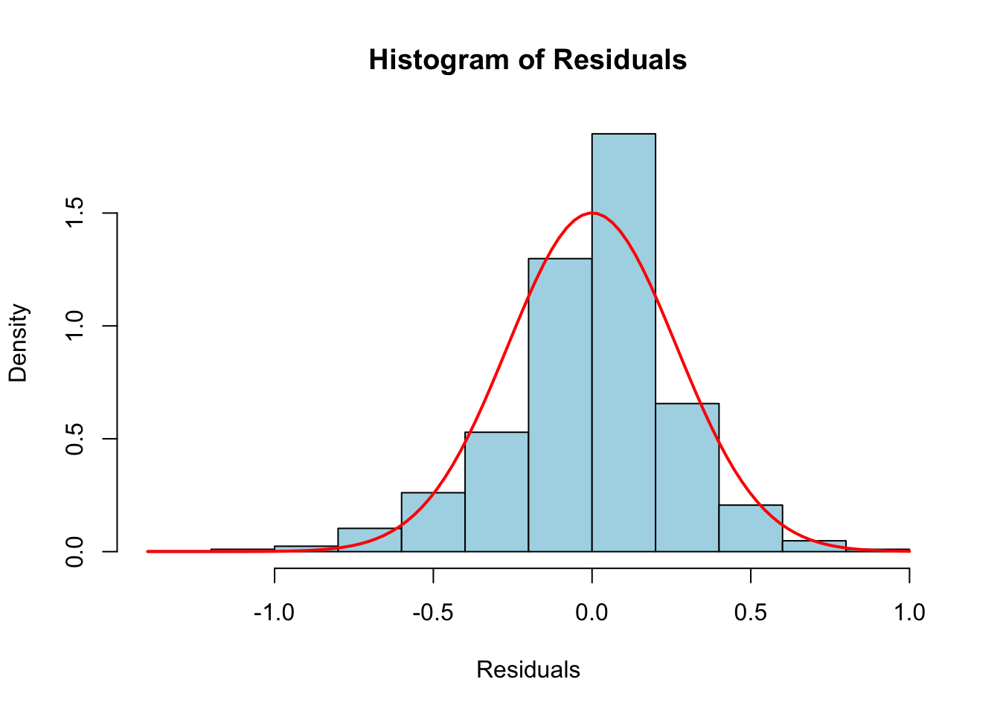
636 is a 3395 sqft house sold for 200,000 as a abnormal sale. This is a large house sold for a very low price. Since abnormal sales can be anything from forclosure to short sale or trade, we may consider excluding this group. For this model we will only exclude the one outlier.
Only explaining another 3% of the variance, this model is not a significant improvement over the SLR. The residual plots show similar patterns to the SLR, with some improvement in homoscedasticity but still some curvature in the residuals vs fitted plot. The histogram of residuals looks more normal.
Enhanced Multiple Linear Regression Models
Starting with a full model including all predictors and then we will work down to a more parsimonious model.
full_model <-lm(log(SalePrice) ~ ., data = train)summary(full_model)
par(mfrow =c(1, 1))# Histogram with normal distribution overlaidhist(full_model$residuals, probability =TRUE, # Use density scalemain ="Histogram of Residuals",xlab ="Residuals",col ="lightblue",border ="black")# Add normal curvecurve(dnorm(x, mean =mean(full_model$residuals), sd =sd(full_model$residuals)), add =TRUE, col ="red", lwd =2)
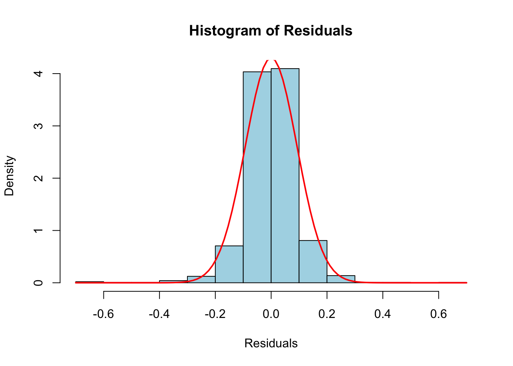
Histogram of residuals looks very condensed to the center and long tailed. Clearly not normal. Studentized residuals show some curvature in the residuals vs fitted plot, but overall the model seems to be doing a good job of capturing the variance in SalePrice with the log transformation.
The model displays overfit and normality concerns. We will work on improving the model by removing some predictors and adding interactions and transformations.
Linearity Check
First we will look for linearity among numerical predictors.
# Get numeric predictors (exclude SalePrice)# Exclude the two extreme outliers identified earliertrain_filtered <- train |>filter(!Id %in%c(524, 1299)) # These two really skew the relationships and are not representative of the general marketnumeric_predictors <- train_filtered |>select(where(is.numeric), -SalePrice) |>names()# Reshape to long format for facetingtrain_long <- train_filtered |>pivot_longer(cols =all_of(numeric_predictors),names_to ="Predictor",values_to ="Value" )# Create the linearity diagnostic plotggplot(train_long, aes(x = Value, y =log(SalePrice))) +geom_point(alpha =0.3, size =0.8) +geom_smooth(method ="loess", color ="red", linewidth =1, se =FALSE) +facet_wrap(~ Predictor, scales ="free_x", ncol =4) +labs(title ="Linearity Check: Numeric Predictors vs log(SalePrice)",subtitle ="Red line = loess smoother. Look for straight lines (good linearity).",x =NULL,y ="log(SalePrice)" ) +theme_bw(base_size =12) +theme(axis.text.x =element_text(angle =45, hjust =1),strip.text =element_text(size =8) )
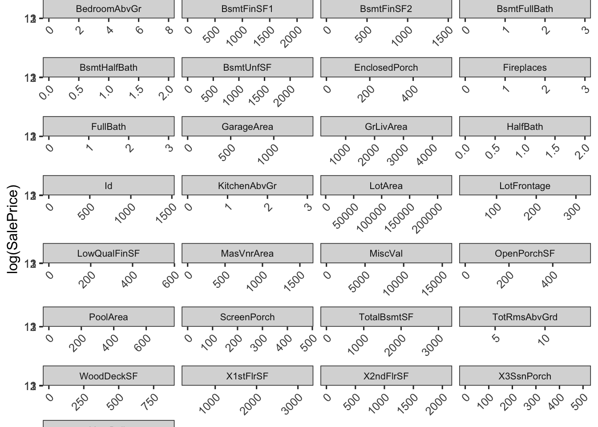
Testing numerical predictors
Reviewing the scatterplots of numeric data against log(SalePrice) with loess smoothers:
GrLiveArea shows a possible quadratic relationship, with diminishing returns at a higher value.
X1stFlrSF and X2ndFlrSf show linear relationships. But this may already be captured by GrLivArea, which is the sum of 1st and 2nd floor area. We may consider removing these two predictors to address multicollinearity.
reduced <-lm(log(SalePrice) ~ GrLivArea, data = train_filtered)full <-lm(log(SalePrice) ~ GrLivArea + X1stFlrSF + X2ndFlrSF, data = train_filtered)anova(reduced, full)
Analysis of Variance Table
Model 1: log(SalePrice) ~ GrLivArea
Model 2: log(SalePrice) ~ GrLivArea + X1stFlrSF + X2ndFlrSF
Res.Df RSS Df Sum of Sq F Pr(>F)
1 1456 110.358
2 1454 89.658 2 20.7 167.85 < 2.2e-16 ***
---
Signif. codes: 0 '***' 0.001 '**' 0.01 '*' 0.05 '.' 0.1 ' ' 1
While there is evidence to suggest 1stFlrSF and 2ndFlrSF improve the model in a statistical sense, multicollinearity occurs because GrLIvArea is effectively of sum of the two variables.
TotRmsAbvGrd show possible linearity but could be capturing the same information as GrLivArea, so we may consider removing it to address multicollinearity.
full <-lm(log(SalePrice) ~ GrLivArea + TotRmsAbvGrd, data = train_filtered)anova(reduced, full)
Analysis of Variance Table
Model 1: log(SalePrice) ~ GrLivArea
Model 2: log(SalePrice) ~ GrLivArea + TotRmsAbvGrd
Res.Df RSS Df Sum of Sq F Pr(>F)
1 1456 110.36
2 1455 107.31 1 3.0434 41.263 1.798e-10 ***
---
Signif. codes: 0 '***' 0.001 '**' 0.01 '*' 0.05 '.' 0.1 ' ' 1
vif(full)
GrLivArea TotRmsAbvGrd
3.205819 3.205819
There is overwhelming evidence adding TotRmsAbvGrd to a model containing GrLivArea produces meaningful predictive power(parital f-test p-value <.0001). Therefore we will keep TotRmsAbvGrd in the model.
LotArea shows a possible linear relationship, with diminishing returns at lower values and an outlier at the high end or possible quadratic relationship at extremes.
full <-lm(log(SalePrice) ~ GrLivArea + LotArea, data = train_filtered)anova(reduced, full)
Analysis of Variance Table
Model 1: log(SalePrice) ~ GrLivArea
Model 2: log(SalePrice) ~ GrLivArea + LotArea
Res.Df RSS Df Sum of Sq F Pr(>F)
1 1456 110.36
2 1455 108.29 1 2.0663 27.763 1.578e-07 ***
---
Signif. codes: 0 '***' 0.001 '**' 0.01 '*' 0.05 '.' 0.1 ' ' 1
vif(full)
GrLivArea LotArea
1.057367 1.057367
There is overwhelming evidence adding LotArea produces meaningful predictive power(parital f-test p-value <.0001). Therefore we will keep LotArea in the model.
BSmtFinSf1 and TotalBsmtSF show possible linear relationship with one outlier at the high end. We may consider grouping all basement variables and testing for lack of fit against a model with TotalBsmtSF as the only basement predictor.
full =lm(log(SalePrice) ~ GrLivArea + TotalBsmtSF, data = train_filtered)anova(reduced, full)
Analysis of Variance Table
Model 1: log(SalePrice) ~ GrLivArea
Model 2: log(SalePrice) ~ GrLivArea + TotalBsmtSF
Res.Df RSS Df Sum of Sq F Pr(>F)
1 1456 110.358
2 1455 75.904 1 34.454 660.45 < 2.2e-16 ***
---
Signif. codes: 0 '***' 0.001 '**' 0.01 '*' 0.05 '.' 0.1 ' ' 1
There’s overwhelming evidence to suggest TotalBsmtSF in a model with GrLivArea has meaningful predictive power (partial f-test p-value <.0001). Any attempts to add other bsmt variables results in high multicolinearity.
GarageArea shows a possible linear relationship with log(SalePrice) but with some outliers at the high end. We may consider grouping all garage variables and testing for lack of fit against a model with GarageArea as the only garage predictor.
reduced =lm(log(SalePrice) ~ GrLivArea, data = train_filtered)full =lm(log(SalePrice) ~ GrLivArea + GarageArea, data = train_filtered)anova(reduced, full)
Analysis of Variance Table
Model 1: log(SalePrice) ~ GrLivArea
Model 2: log(SalePrice) ~ GrLivArea + GarageArea
Res.Df RSS Df Sum of Sq F Pr(>F)
1 1456 110.358
2 1455 79.269 1 31.089 570.65 < 2.2e-16 ***
---
Signif. codes: 0 '***' 0.001 '**' 0.01 '*' 0.05 '.' 0.1 ' ' 1
vif(full)
GrLivArea GarageArea
1.263044 1.263044
reduced =lm(log(SalePrice) ~ GrLivArea + GarageArea, data = train_filtered)full =lm(log(SalePrice) ~ GrLivArea + GarageArea + GarageType, data = train_filtered)anova(reduced, full)
Analysis of Variance Table
Model 1: log(SalePrice) ~ GrLivArea + GarageArea
Model 2: log(SalePrice) ~ GrLivArea + GarageArea + GarageType
Res.Df RSS Df Sum of Sq F Pr(>F)
1 1455 79.269
2 1449 62.824 6 16.445 63.215 < 2.2e-16 ***
---
Signif. codes: 0 '***' 0.001 '**' 0.01 '*' 0.05 '.' 0.1 ' ' 1
There’s overwhelming evidence to suggest GarageArea in a model with GrLivArea and GarageType has meaningful predictive power (partial f-test p-value <.0001). Any attempts to add other Garage variables other than GarageType results in high multicolinearity.
FirePlaces show possible linear relationship with log(SalePrice) but may not be enough to provide predictive power. We may consider grouping all fireplace variables and testing for lack of fit against a model with FirePlaces as the only fireplace predictor.
reduced =lm(log(SalePrice) ~ GrLivArea, data = train_filtered)full =lm(log(SalePrice) ~ GrLivArea + Fireplaces, data = train_filtered)anova(reduced, full)
Analysis of Variance Table
Model 1: log(SalePrice) ~ GrLivArea
Model 2: log(SalePrice) ~ GrLivArea + Fireplaces
Res.Df RSS Df Sum of Sq F Pr(>F)
1 1456 110.36
2 1455 102.77 1 7.5873 107.42 < 2.2e-16 ***
---
Signif. codes: 0 '***' 0.001 '**' 0.01 '*' 0.05 '.' 0.1 ' ' 1
vif(full)
GrLivArea Fireplaces
1.263971 1.263971
reduced =lm(log(SalePrice) ~ GrLivArea + Fireplaces, data = train_filtered)full =lm(log(SalePrice) ~ GrLivArea + Fireplaces + FireplaceQu, data = train_filtered)anova(reduced, full)
Analysis of Variance Table
Model 1: log(SalePrice) ~ GrLivArea + Fireplaces
Model 2: log(SalePrice) ~ GrLivArea + Fireplaces + FireplaceQu
Res.Df RSS Df Sum of Sq F Pr(>F)
1 1455 102.770
2 1450 97.302 5 5.4689 16.3 1.136e-15 ***
---
Signif. codes: 0 '***' 0.001 '**' 0.01 '*' 0.05 '.' 0.1 ' ' 1
There’s overwhelming evidence to suggest Fireplaces in a model with GrLivArea and FireplaceQu has meaningful predictive power (partial f-test p-value <.0001).
While WoodDeckSF has potential linear relationship, the variance is too high while linearity is nearly flat. We may consider removing this predictor.
We saw earliier in model_mlr1 that FullBath has a linear relationship with log(SalePrice) and improved our model by adding 3% to the R². We will keep it in the model unless it shows multicollinearity with other predictors.
reduced =lm(log(SalePrice) ~ GrLivArea + FullBath, data = train_filtered)full =lm(log(SalePrice) ~ GrLivArea + FullBath + HalfBath, data = train_filtered)anova(reduced, full)
Analysis of Variance Table
Model 1: log(SalePrice) ~ GrLivArea + FullBath
Model 2: log(SalePrice) ~ GrLivArea + FullBath + HalfBath
Res.Df RSS Df Sum of Sq F Pr(>F)
1 1455 103.41
2 1454 102.94 1 0.47769 6.7474 0.009483 **
---
Signif. codes: 0 '***' 0.001 '**' 0.01 '*' 0.05 '.' 0.1 ' ' 1
There’s evidence to suggest Halfbath may have some predictive power (partial f-test p-value = 0.0095).
Flat relationships with log(SalePrice) are observed and will be removed from our model: BedroomAbvGr, BsmtFullBath, BsmtHalfBath, EnclosedPorch, HalfBath, KitchenAbvGr, LowQualFinSf, MiscVal, OpenPorchSF, PoolArea, ScreenPorch, X3SsnPorch, YearBuilt.
Considering these values have potential linearity, but too strong of grouping at 0, we may consider using binary predictors: MasVnrArea, WoodDeckSf
LotFrontage has imputed values that may be skewing the relationship. We will proceed with caution.
We’ll focus on variables that may not have a strong relationship with SalePrice to consider removing from the model. We’ve confirmed GrLivArea, GarageArea, TotalBsmtSF, and FullBath have strong relationships with SalePrice so we will test other categorical predictors against a reduced model with these four predictors.
# Ordered evaluation of all categorical predictors by RSS dropevaluate_all_categorical <-function() { base_formula <-"log(SalePrice) ~ GrLivArea + GarageArea + TotalBsmtSF + FullBath" results <-map_dfr(cat_vars, function(var_name) { full_formula <-as.formula(paste(base_formula, "+", var_name)) reduced <-lm(as.formula(base_formula), data = train_filtered) full <-lm(full_formula, data = train_filtered) anova_result <-anova(reduced, full)tibble(Variable = var_name,`RSS Drop`=round(anova_result$`Sum of Sq`[2], 4),`Adj R²`=round(summary(full)$adj.r.squared, 4),`p-value`=format.pval(anova_result$`Pr(>F)`[2], digits =3),Levels =length(unique(train_filtered[[var_name]])) ) }) |>arrange(desc(`RSS Drop`))print(results, n =Inf)invisible(results)}results <-evaluate_all_categorical()
We’ll use a 5 RSS drop threshold to determine which predictors to keep. This is somewhat arbitrary but provides a way to focus on predictors that are providing meaningful improvements to the model fit.
Now down to 25 predictors. We will check for multicollinearity using VIF and remove any predictors with VIF > 5, starting with the most extreme values.
model_mlr2 <-lm(log(SalePrice) ~ . - Exterior2nd, data = train_filtered) # Removing Exterior2nd due to high VIF and low RSS drop)summary(model_mlr2)
Warning: not plotting observations with leverage one:
326, 376, 533, 1011, 1187, 1369
par(mfrow =c(1, 1))# Histogram with normal distribution overlaidhist(model_mlr2$residuals, probability =TRUE, # Use density scalemain ="Histogram of Residuals",xlab ="Residuals",col ="lightblue",border ="black")# Add normal curvecurve(dnorm(x, mean =mean(model_mlr2$residuals), sd =sd(model_mlr2$residuals)), add =TRUE, col ="red", lwd =2)
# show which variables are problematicvif_values <- car::vif(model_mlr2)vif_values |>as_tibble(rownames ="Variable") |>arrange(desc(`GVIF^(1/(2*Df))`)) |>mutate(across(where(is.numeric), round, 3))
Warning: There was 1 warning in `mutate()`.
ℹ In argument: `across(where(is.numeric), round, 3)`.
Caused by warning:
! The `...` argument of `across()` is deprecated as of dplyr 1.1.0.
Supply arguments directly to `.fns` through an anonymous function instead.
# Previously
across(a:b, mean, na.rm = TRUE)
# Now
across(a:b, \(x) mean(x, na.rm = TRUE))
The model has some multicollinearity issues with GrLivArea, GarageArea, and TotalBsmtSF. However, these are some of the most important predictors in the model and removing them would significantly reduce the model’s predictive power. We will consider combining these predictors into a single predictor.
Exterior2nd and TotRmsAbvGrd presented the next highest VIF values and were not providing meaningful improvements to the model fit, so we will remove them from the model.
Warning: not plotting observations with leverage one:
326, 376, 533, 1011, 1187, 1369
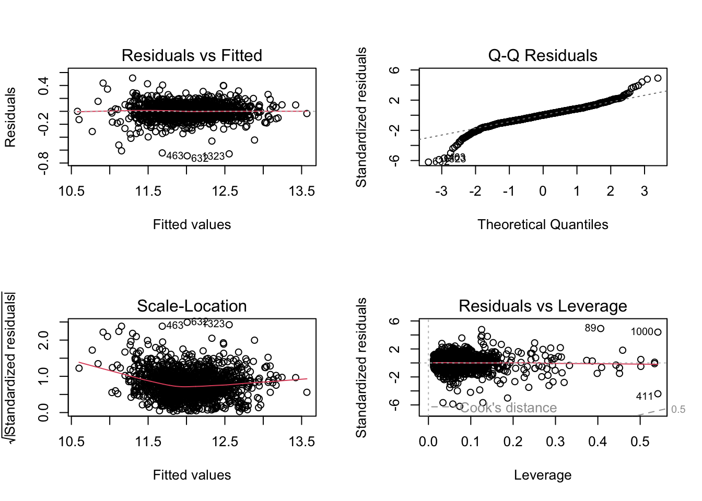
par(mfrow =c(1, 1))# Histogram with normal distribution overlaidhist(model_mlr2$residuals, probability =TRUE, # Use density scalemain ="Histogram of Residuals",xlab ="Residuals",col ="lightblue",border ="black")# Add normal curvecurve(dnorm(x, mean =mean(model_mlr2$residuals), sd =sd(model_mlr2$residuals)), add =TRUE, col ="red", lwd =2)
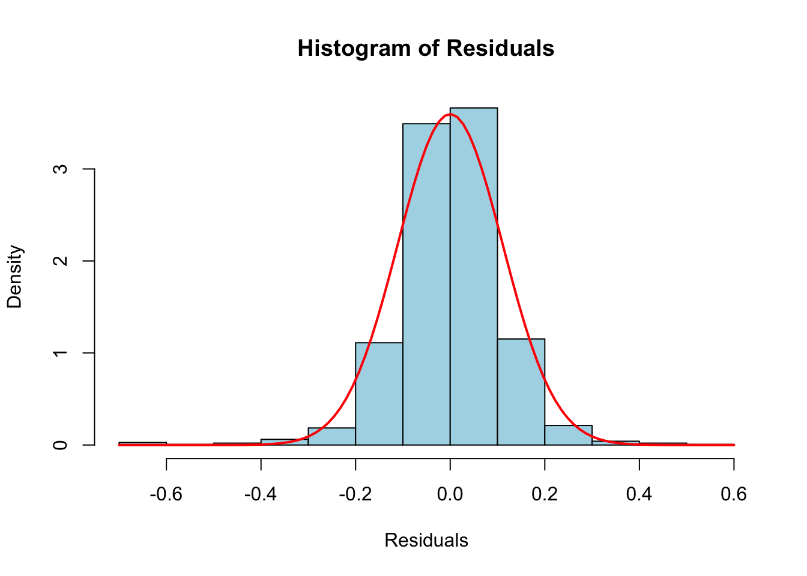
# show which variables are problematicvif_values <- car::vif(model_mlr2)vif_values |>as_tibble(rownames ="Variable") |>arrange(desc(`GVIF^(1/(2*Df))`)) |>mutate(across(where(is.numeric), round, 3))
model_mlr2 still has significantly more predictive power than a single-variable TotalSF model. We’ll proceed with stepwise starting with highest RSS drop variables and checking for multicollinearity at each step.
Stepwise Feature Selection
We will forgo reviewing residual plots during this step until we begin transformations on predictor variables.
model_mlr2.1=lm(log(SalePrice) ~ TotalSF + Neighborhood, data = train_filtered)summary(model_mlr2.1)
Both MSSubClass and Kitchen Qual provided about 1 or 2 RSS drop and started to show some multicolinearity issues. This may be due to neighborhood having 25 levels and potentially capturing some of the same information. One option is to combine levels of neighborhood into fewer groups, but for now we will proceed with the model without these two predictors.
model_mlr2.21 starts to show signs of multicollinearity when adding Neighborhood or OverallQual interactions. Our model either needs to use difference predictors or we need to collapse from 25 levels in neighborhood to a few. We do not have enough information about the neighborhood to confidently collapse into groups, so we will proceed without interactions.
Final Model and Assumptions Check
Previous review of residual plots showed showed some curviture in Q-Q Residuals and minor questions regarding normality. This is a final attempt to ensure assumptions of linear regression are met as closely as possible for our preferred model.
par(mfrow =c(1, 1))# Histogram with normal distribution overlaidhist(model_mlr3$residuals, probability =TRUE, # Use density scalemain ="Histogram of Residuals",xlab ="Residuals",col ="lightblue",border ="black")# Add normal curvecurve(dnorm(x, mean =mean(model_mlr3$residuals), sd =sd(model_mlr3$residuals)), add =TRUE, col ="red", lwd =2)
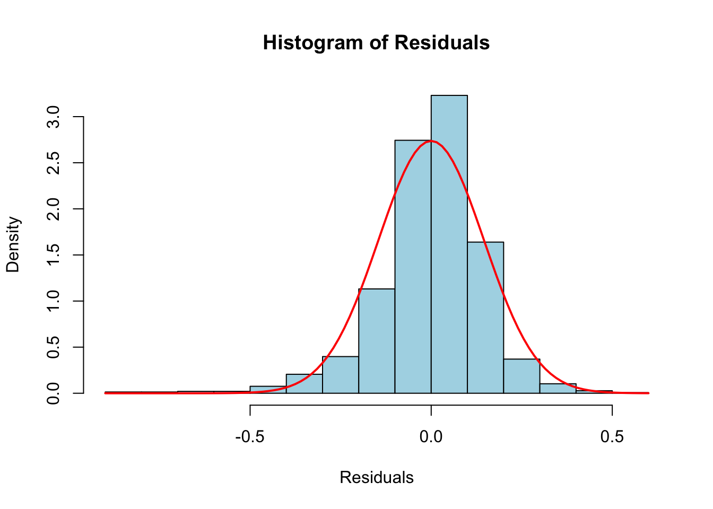
We will start addressing normality problems by reviewing each predictor against SalePrice and transform to fit.
library(gridExtra)
Attaching package: 'gridExtra'
The following object is masked from 'package:dplyr':
combine
# Three plots to compare transformationsp1 <-ggplot(train_filtered, aes(x = TotalSF, y =log(SalePrice))) +geom_point(alpha =0.5, color ="steelblue") +geom_smooth(method ="loess", color ="red", se =FALSE) +labs(title ="2. log(SalePrice) vs TotalSF",x ="TotalSF", y ="log(SalePrice)") +theme_bw(base_size =12)p2 <-ggplot(train_filtered, aes(x =log(TotalSF), y =log(SalePrice))) +geom_point(alpha =0.5, color ="steelblue") +geom_smooth(method ="loess", color ="red", se =FALSE) +labs(title ="3. log(SalePrice) vs log(TotalSF)",x ="log(TotalSF)", y ="log(SalePrice)") +theme_bw(base_size =12)p3 <-ggplot(train_filtered, aes(x =log(TotalSF), y = SalePrice^2)) +geom_point(alpha =0.5, color ="steelblue") +geom_smooth(method ="loess", color ="red", se =FALSE) +labs(title ="3. log(SalePrice) vs TotalSF^2",x ="TotalSF^2", y ="log(SalePrice)") +theme_bw(base_size =12)p4 <-ggplot(train_filtered, aes(x =log(TotalSF), y = SalePrice^2)) +geom_point(alpha =0.5, color ="steelblue") +geom_smooth(method ="loess", color ="red", se =FALSE) +labs(title ="3. log(SalePrice) vs TotalSF^3/4",x ="TotalSF^3/4", y ="log(SalePrice)") +theme_bw(base_size =12)grid.arrange(p1, p2, p3, p4, ncol =2)
`geom_smooth()` using formula = 'y ~ x'
`geom_smooth()` using formula = 'y ~ x'
`geom_smooth()` using formula = 'y ~ x'
`geom_smooth()` using formula = 'y ~ x'
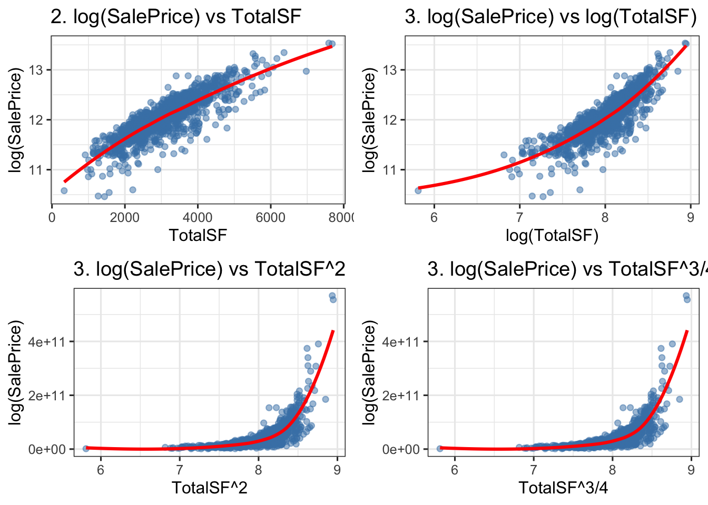
# Three versions of TotalSFmodel_linear <-lm(log(SalePrice) ~ TotalSF + Neighborhood + OverallQual, data = train_filtered)model_log <-lm(log(SalePrice) ~log(TotalSF) + Neighborhood + OverallQual, data = train_filtered)model_quad <-lm(log(SalePrice) ~poly(TotalSF, 2) + Neighborhood + OverallQual, data = train_filtered)par(mfrow =c(3, 3), mar =c(4, 4, 3, 1))# Row 1: Linear TotalSF (current model_mlr3)hist(model_linear$residuals, probability =TRUE, main ="Linear TotalSF\nResidual Histogram", col ="lightblue")curve(dnorm(x, mean =mean(model_linear$residuals), sd =sd(model_linear$residuals)), add =TRUE, col ="red", lwd =2)qqnorm(model_linear$residuals, main ="Linear: Q-Q Plot")qqline(model_linear$residuals, col ="red")# Row 2: log(TotalSF)hist(model_log$residuals, probability =TRUE, main ="log(TotalSF)\nResidual Histogram", col ="lightblue")curve(dnorm(x, mean =mean(model_log$residuals), sd =sd(model_log$residuals)), add =TRUE, col ="red", lwd =2)qqnorm(model_log$residuals, main ="log: Q-Q Plot")qqline(model_log$residuals, col ="red")# Row 3: Quadratic TotalSFhist(model_quad$residuals, probability =TRUE, main ="Quadratic TotalSF\nResidual Histogram", col ="lightblue")curve(dnorm(x, mean =mean(model_quad$residuals), sd =sd(model_quad$residuals)), add =TRUE, col ="red", lwd =2)qqnorm(model_quad$residuals, main ="Quadratic: Q-Q Plot")qqline(model_quad$residuals, col ="red")par(mfrow =c(1, 1))
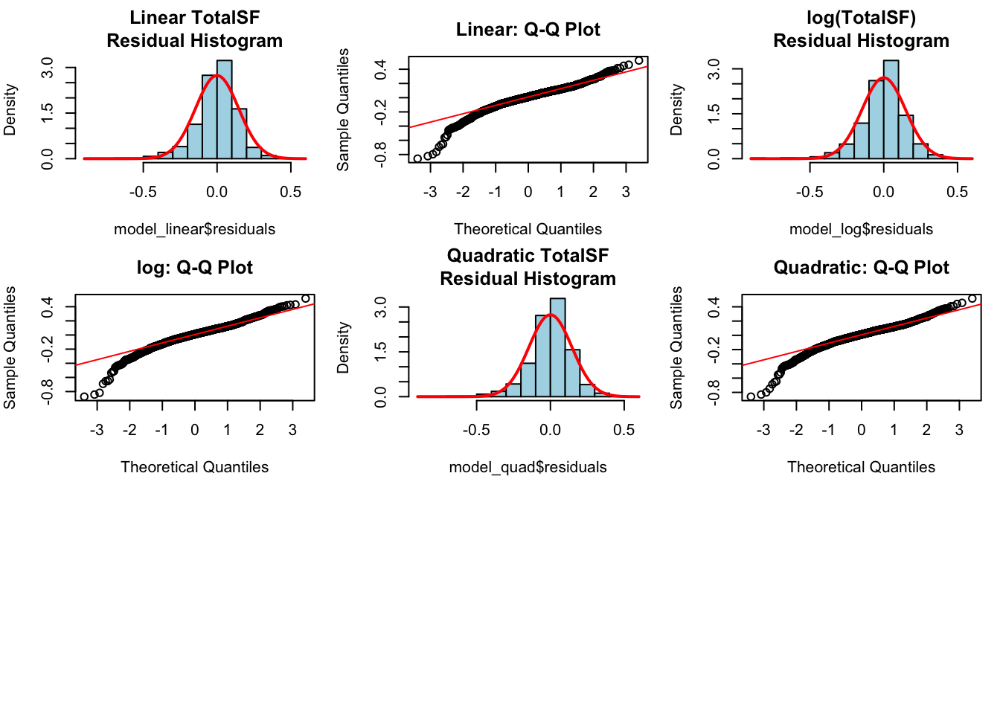
A quadratic transformation may be slightly beneficial, but at the cost of interpretability. Since it does not fully address concerns of normality, we will proceed with caution.
# Boxplot of log(SalePrice) by Neighborhood (ordered by median)ggplot(train_filtered, aes(x =reorder(Neighborhood, log(SalePrice), FUN = median), y =log(SalePrice))) +geom_boxplot(outlier.alpha =0.6, fill ="steelblue", alpha =0.7) +geom_point(position =position_jitter(width =0.2), alpha =0.3, size =1) +labs(title ="log(SalePrice) by Neighborhood (ordered by median)",subtitle ="Clear differences between neighborhoods",x ="Neighborhood",y ="log(SalePrice)") +theme_bw(base_size =12) +theme(axis.text.x =element_text(angle =45, hjust =1, size =9))
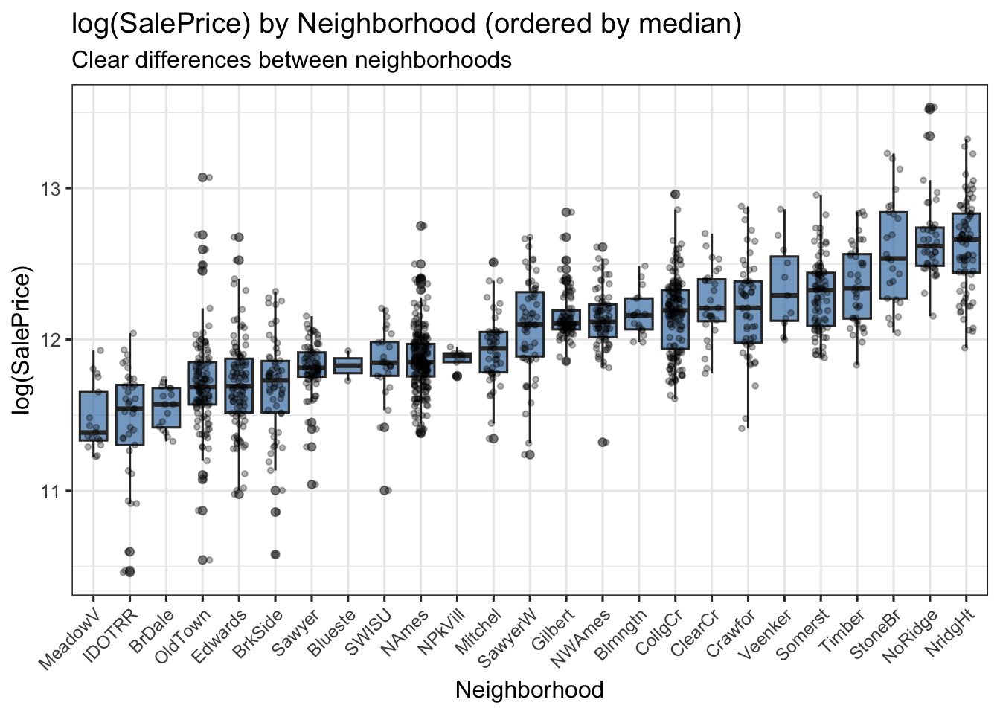
par(mfrow =c(2, 2), mar =c(4.5, 4, 3, 1))# Residual histogramhist(model_linear$residuals, probability =TRUE,main ="Overall Residual Histogram", col ="lightblue")curve(dnorm(x, mean =mean(model_linear$residuals),sd =sd(model_linear$residuals)),add =TRUE, col ="red", lwd =2)# Q-Q plotqqnorm(model_linear$residuals, main ="Q-Q Plot of Residuals")qqline(model_linear$residuals, col ="red", lwd =2)# Boxplot of residuals by Neighborhoodboxplot(model_linear$residuals ~ train_filtered$Neighborhood,main ="Residuals by Neighborhood",xlab ="Neighborhood", ylab ="Residuals",col ="lightblue")abline(h =0, col ="red", lwd =2)par(mfrow =c(1, 1))
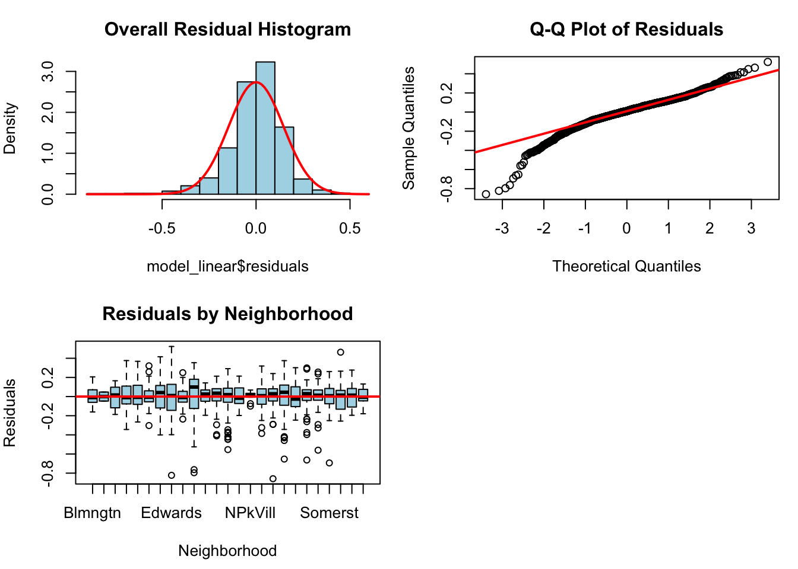
Unlike TotalSF, Neighborhood is categorical and will not benefit from mathmatical transformations. There are very large differences between neighborhoods. Some neighborhoods have much higher median SalePrice than others, and the variance of SalePrice also differs between neighborhoods. This may be contributing to the non-normality of residuals and heteroscedasticity. Grouping levels may effect our predictive power, so our final model will include Neighborhood as-is and a reduced model with Neighborhood grouped into fewer levels for comparison.
# Create a grouped version of Neighborhood (4 logical tiers)train_filtered <- train_filtered |>mutate(NeighborhoodGroup =case_when( Neighborhood %in%c("NoRidge", "NridgHt", "StoneBr", "Veenker", "Timber") ~"HighEnd", Neighborhood %in%c("CollgCr", "Crawfor", "ClearCr", "Somerst", "Gilbert", "NWAmes", "SawyerW", "Blmngtn") ~"UpperMid", Neighborhood %in%c("NAmes", "Mitchel", "NPkVill", "SWISU", "Sawyer", "Edwards") ~"Middle", Neighborhood %in%c("BrkSide", "OldTown", "IDOTRR", "MeadowV", "BrDale", "Blueste")~"Lower",TRUE~"Other" ) )# Convert to ordered factortrain_filtered$NeighborhoodGroup <-factor( train_filtered$NeighborhoodGroup, levels =c("Lower", "Middle", "UpperMid", "HighEnd"))# Fit the new model with grouped neighborhoodsmodel_mlr3_normal <-lm(log(SalePrice) ~ TotalSF + NeighborhoodGroup + OverallQual, data = train_filtered)# Compare the two modelssummary(model_mlr3_normal)
Analysis of Variance Table
Model 1: log(SalePrice) ~ TotalSF + Neighborhood + OverallQual
Model 2: log(SalePrice) ~ TotalSF + NeighborhoodGroup + OverallQual
Res.Df RSS Df Sum of Sq F Pr(>F)
1 1423 30.956
2 1444 33.199 -21 -2.2426 4.909 2.676e-12 ***
---
Signif. codes: 0 '***' 0.001 '**' 0.01 '*' 0.05 '.' 0.1 ' ' 1
par(mfrow =c(2, 2))plot(model_mlr3_normal)
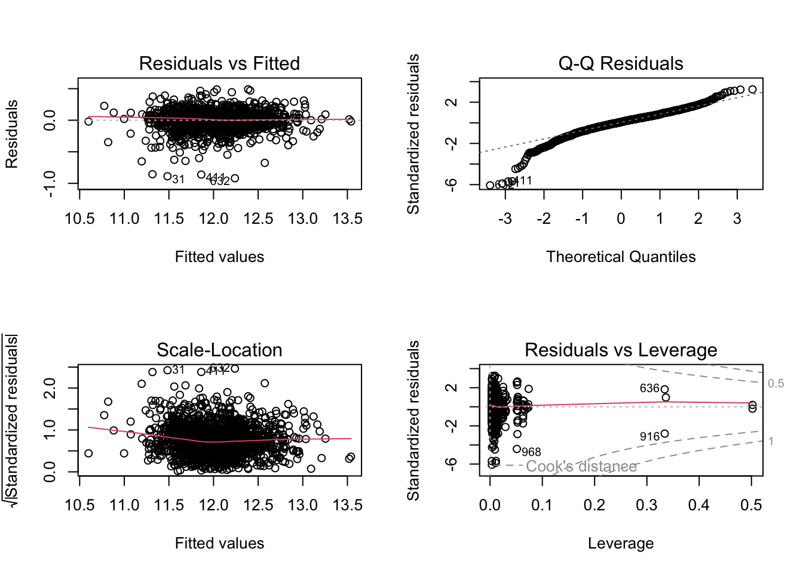
par(mfrow =c(1, 1))# Histogram with normal distribution overlaidhist( model_mlr3_normal$residuals, probability =TRUE, # Use density scalemain ="Histogram of Residuals",xlab ="Residuals",col ="lightblue",border ="black")# Add normal curvecurve(dnorm( x, mean =mean(model_mlr3_normal$residuals), sd =sd(model_mlr3_normal$residuals) ), add =TRUE, col ="red", lwd =2)
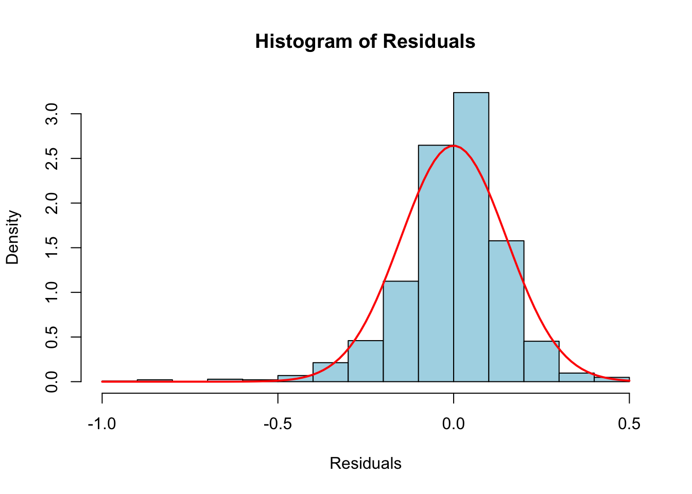
There’s evidence that grouping Neighborhood into 4 groups results in a significant drop in model fit while not significantly improving normality judging from visual residual plots (partial f-test p-value <.0001). The model with 25 levels of Neighborhood has better fit and predictive power.
Finally we’ll address any remaining outliers’ leverage and Cook’s distance then refit the model if needed.
# Focus on your best model (model_mlr3)p <-length(coef(model_mlr3)) # number of parametersn <-nrow(train_filtered)leverage_threshold <-2* p / n # cutoffcat("Leverage threshold (2p/n):", round(leverage_threshold, 4), "\n\n")
Leverage threshold (2p/n): 0.048
# Extract leverage and Cook's distancehat_values <-hatvalues(model_mlr3)cooks_d <-cooks.distance(model_mlr3)# Find high leverage pointshigh_leverage_idx <-which(hat_values > leverage_threshold)cat("Found", length(high_leverage_idx), "high leverage points\n\n")
Found 128 high leverage points
# Show details of those observationsif(length(high_leverage_idx) >0) { high_lev_points <- train_filtered[high_leverage_idx, ] |>select(TotalSF, Neighborhood, OverallQual, SalePrice) |>mutate(Row = high_leverage_idx,Leverage =round(hat_values[high_leverage_idx], 4),Cooks_D =round(cooks_d[high_leverage_idx], 5),Residual =round(model_mlr3$residuals[high_leverage_idx], 4) ) |>arrange(desc(Leverage))print(high_lev_points)}
Our data does not have outliers with > .5 Cook’s distance, but it does have some high leverage points.
The top 4 leverage outliers are still meaningful, representing abnormal sales conditions and unique properties.
All NPkVill obersvations show as high leverage points, but this is a unique neighborhood. This is likely a real phenomenon and not an error, so we will keep these observations in the model.
Model Comparison and Evaluation
SLR = (SalePrice | GrLivArea) MLR1 = (SalePrice | GrLivArea + FullBath) MLR2 = (SalePrice | 25 predictors) full model after EDA considering linearily related variables MLR3 = (SalePrice | TotalSF + Neighborhood + OverallQual) MLR3.N = (SalePrice | TotalSF + NeighborhoodGroup + OverallQual) After grouping Neighborhood into 4 groups based on median sales price.
Adjusted R²: How well the model explains variance (higher is better)
PRESS: Leave-one-out cross-validation error (lower is better)
CV RMSE (log scale): 10-fold cross-validation root mean squared error (lower is better)
AIC: Balance between fit and complexity (lower is better)
Model MLR3 has the best performance across all metrics, with the highest adjusted R², lowest PRESS, lowest CV RMSE, and lowest AIC. The model with grouped Neighborhood (MLR3.N) has slightly worse performance than MLR3 but better AIC, suggesting that the detailed neighborhood information is important enough to justify the added complexity.
Kaggle Submission
First need to mutate the test dataset to have the same predictors as our final model. We will also need to impute any missing values in the test set using the same methods as the training set.